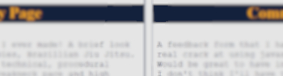
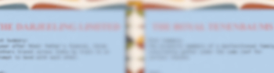
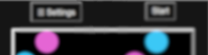

About Me
I'm Taha Hassan, an EFL teacher and aspiring front end developer. I always have a hobby or project on the go and it usually involves making something. Some of my interests include: music, 3D animation, activism, film, martial arts, languages/translation and, of course, software development.
I've thrown myself at a lot of things over the years so I've had to pick up new skills a lot. I've become acutely aware of the unimportance of natural talent, and the corresponding importance of practice. Just getting the repetitons in until it becomes embodied.
Generated by Dall-E2
Application Projects
Here are the projects I completed for the application. I learned a lot while working through the projects. I found each one was just perfectly out of my reach at the time that I attempted it, which lead me to learn new skills. The Hobby Page was the first website I had ever made at that point. By the time I finished it I had learned enough to be able to begin the next project. As I look through them all now it's amazing to see my progress. I would have liked to have had more time to redo some of the old projects with my new skills, but I've only managed a few touch ups.
The images link to the deployed pages. You can find links to the github repositories here:
Hobby Page
A brief look at why I love BJJ
Project Gallery
Projects I've completed
Comment Box

A page for airing grievances
Movie Data
A place to post film reviews
Website Feature
2d Particle collision simulator.
Why I'm Applying
I've been looking to move out of EFL teaching for a while, the pandemic really highlighted to be how unstable that kind of work is in this country. I've had some prior experience with programming, python in particular and I've always been interested in getting into software development, specifically app development. I've had an idea for an app I want to make that I think would be quite simple, but it doesn't exist yet. I would like to make an app that does a little hearing test and then EQs all of the audio going out of your device to compensate for any hearing loss. It would allow users to lower the overall volume of their devices and protect their hearing for longer.
A couple of friends of mine have done the Founders and Coders bootcamp (I don't think it was an apprenticeship at the time) and were successful in finding great jobs afterwards so I was encouraged to apply. From what I've seen of Founders and Coders so far, I've been very impressed. I think you put a lot of care and thought into every stage of the application process, I was quite touched to be asked about my access needs and contacted ahead of time to clarify how best to support me. I think you guys seem to value the same sorts of things that I value: a community spirit, a safe and welcoming space and a diverse group of perspectives. I hope it's something I can contribute to one day.
Below is some information on my various hobbies and the things I've managed to achieve in them. It's a real patchwork quilt!
Music
My first instrument was the guitar but I also play bass and use a DAW (Digital Audio Workstation).
I've been a band member of Screaming Toenail a queer decolonial punk band. I play guitar, sometimes bass and help write songs. In the time I've played for them we've released an album, we've done a short UK tour and we've played in international music festivals along with acts such as Mykki Blanco.
I've also been commisioned to compose music for a podcast, a short film and a radioplay.
Animation
I wanted to make videos to go along with musical ideas I had so I did a course on blender animation.
I loved how it was both very very technical and also very very creative. I'm especially into using texture maps, particle simulation and procedural generation.
Here is the first animation I ever made.
Activism
I was a member of the squatted queer social center collective, the House Of Brag.
We put on lots of events including parties, gigs, workshops, protests film screenings and more. I learned a lot about collaborating with others, how to run a meeting and how to coordinate people.
These days I volunteer with Housing Action Southwark and Lambeth, a self-organised housing collective of homeless and poorly-housed people in South London. I do Spanish-English translation and childcare.
Martial Arts
I love Brazillian Jiu Jitsu, but I've also done some Muay Thai.
I've been training off and on for the past 8 years, more off than on because of some chronic injuries. I love that it is a sport that is very techincal, creative, consequential and physically demanding. In my time training as a martial artist I've competed and also volunteered as a Muay Thai coach at a queer kickboxing class.